JBL
System / Web. Truck launch that rewrote the industry playbook
+4,700%
Jump-in referrals
Kris Jensson Design Portfolio
Leading work for Venmo's biggest redesign in a decade
A decade of shipping had left the app carrying every decision it ever made. I led the design work that rebuilt it as one system, and the staged rollout that put it in front of millions without breaking the habit they already had.
Turning NFL into a D2C growth engine
A media brand that needed to sell subscriptions, not just show football. I led the design of the surfaces that carry NFL+ acquisition, built so a change to the season lands in one place instead of five.
System / Web. Truck launch that rewrote the industry playbook
System / Web. Turning 40+ scattered sites into one global voice
System / Web / Brand Transforming ETS into a global leader in education
5
Webby Awards
3
W3 Awards
2
Shorty Awards
1
ANA Ace Awards
Kris has an incredible eye for visual design. He brings a level of craft and polish that consistently makes the work feel more distinctive and considered
Kris has a rare ability to turn complex product problems into experiences that feel simple, beautiful, and intuitive
Kris has a rare ability to turn complex product problems into experiences that feel simple, beautiful, and intuitive
Kris consistently raises the bar for craft. He brings strong taste, thoughtful systems thinking, and a level of execution that makes the entire team’s work better
Kris has an incredible eye for visual design. He brings a level of craft and polish that consistently makes the work feel more distinctive and considered
Kris has a rare ability to turn complex product problems into experiences that feel simple, beautiful, and intuitive
Kris has a rare ability to turn complex product problems into experiences that feel simple, beautiful, and intuitive
After 8+ years in design, I’ve learned to embrace constraints and adapt as I go. But one thing has stayed constant: delightful design isn’t a nice-to-have. It’s the baseline.
Story/long version
I’m drawn to the part of design where craft meets reality; navigating complex constraints and ambitious KPIs while still raising the standard and delight. Because to me, craft isn’t a nice-to-have. It’s the baseline.
A lot of how I work has been shaped outside of design too. Soccer brought me from Iceland to San Francisco and taught me early the importance of team. Away from the screen, life is mostly fun stuff with my girlfriend, caring for our dog Marlowe, and a huge appreciation for food, Arsenal, and San Francisco.
I like to get close to the people, the problem, and the context as early as I can. The more I understand what matters, the easier it is to move with intention.
Starting early creates room to try directions, challenge assumptions, and push the details until the experience feels considered and complete.
Ship it. See how the work performs in the real world, and use what you learn to keep making it better.
I like to get close to the people, the problem, and the context as early as I can. The more I understand what matters, the easier it is to move with intention.
Starting early creates room to try directions, challenge assumptions, and push the details until the experience feels considered and complete.
Ship it. See how the work performs in the real world, and use what you learn to keep making it better.
story/the path
A not-so-straight path through soccer, San Francisco, school, ambitious projects, and the experiences that shaped how I work today.
I grew up in Iceland, splitting most of my time between school and a soccer field. In 2017, I moved to San Francisco to study interaction design and keep playing the game I’d grown up with.
Four years at Academy of Art meant design classes by day and goalkeeper gloves by night. I played for the university team for four year, captained for two, and made some of my best mates while doing it.
I graduated with a BFA in UX/UI Interaction Design and left school knowing I wanted to make digital products for a living. Soccer stayed with me, but design had officially become the main thing.
At YML, I went from internships and student projects to real products, real clients and real constraints. Biggest growth of my career, and where I really learned what great culture stood for.
Code and Theory threw me into ambitious work across brands, products and industries. JBL, NFL, Volvo, Lucid and plenty more taught me how to move fast without letting the craft disappear.
After years of jumping between clients, industries and problems, I wanted to go deeper. One product, one team, and the chance to live with the decisions long after launch.
Today I’m helping rethink Venmo, an app I’d already loved and used for years. I still play and coach soccer on the side, and spend the rest of my time in San Francisco with my Aussie girlfriend and our little pup Marlowe aka Goose aka Chubby aka no barking, who is unquestionably in charge.


Personal information
Professional summary
I’m drawn to the part of design where craft meets reality; navigating complex constraints and ambitious KPIs while still raising the standard and delight. Because to me, craft isn’t a nice-to-have. It’s the baseline.
Work experience
/Current
Staff Experience Designer
Venmo
I’m drawn to the part of design where craft meets reality; navigating complex constraints and ambitious KPIs while still raising the standard and delight. Because to me, craft isn’t a nice-to-have. It’s the baseline.
/2023 - 2025
Senior Product Designer
Code & Theory
I’ve led high-impact work across early-stage concepts, large-scale system design, and global brand experiences. I partner with internal and external teams to define and scale design systems, elevate visual craft, and bring clarity to complex digital challenges eyeing both user experience and business outcomes. Building end to end digital experiences for companies leading in their field.
Clients include
ETS
Defined early-stage visual direction that helped the re-brand win multiple design awards.
NFL
Leading VD and system build for the current web redesign, scaling the design system across platforms
JBL
Defined early-stage visual direction that helped the re-brand win multiple design awards.
Amazon
Contributed to new product directions and UI frameworks for Amazon Ads.
/2019 - 2023
Product Designer
YML
Building end to end digital experiences for companies leading in their field.
Clients include
ETS
Defined early-stage visual direction that helped the re-brand win multiple design awards.
NFL
Leading VD and system build for the current web redesign, scaling the design system across platforms
JBL
Defined early-stage visual direction that helped the re-brand win multiple design awards.
Amazon
Contributed to new product directions and UI frameworks for Amazon Ads.
Resetting the stage
for a global audio brand
JBL is a global leader in audio innovation, known for delivering powerful sound through cutting-edge speakers, headphones, and audio technology, trusted by music lovers, professionals, and performers worldwide.
JBL’s 40+ regional sites offered varying, disjointed impressions, and didn’t express brand guidelines that were refreshed to resonate with Gen Z + existing fans. Their vibrant brand ethos wasn’t evident in any digital touchpoint.
Collaborated with a small team to redesign the global JBL website, establishing a scalable visual language used across 40+ country sites. Focused on creating a unified system that balanced brand expression with global adaptability, setting the foundation for ongoing development and implementation.
+24%
Increase in avg.
session time on page
+31%
Decrease in bounce
rate on L1 pages
+100%
Systemized, better, and
cohesive brand
JBL/strategy
To establish and solidify JBL’s standing with audiences across the world, we overhauled the upper-mid funnel experiences to better attract and guide with audiences who possess differing levels of familiarity with the brand and products.
To support those different needs, we created clearer ways to discover JBL, learn about its products, and engage with the brand through more immersive educational moments.
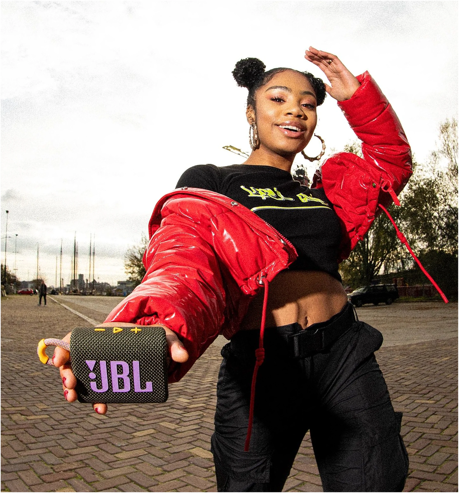
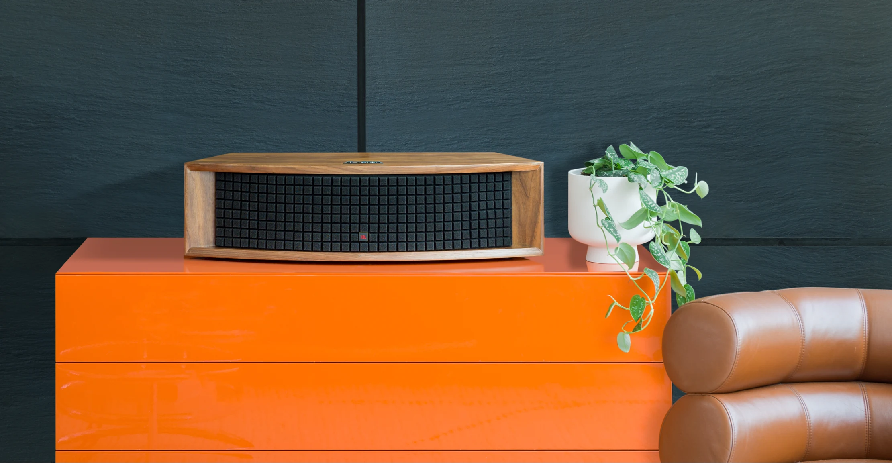
JBL/Visual Identity
We developed stylistic elements and flexible components that allow JBL’s dynamic personality to punctuate any page on the site.
/SYSTEM SNAPSHOT
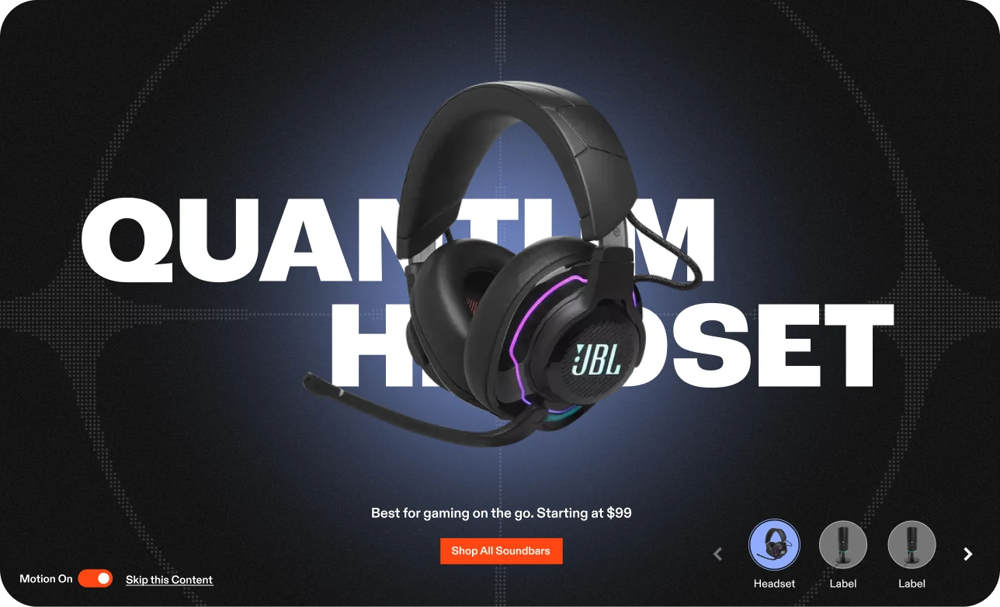
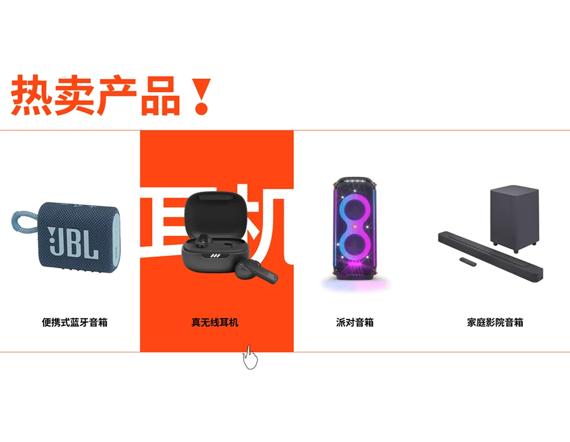
/Motion
We brought Cymatics to life by capturing the natural patterns created as sound frequencies move, then used them both as decorative motion and static elements.
These visuals became a core part of the website, creating a design language rooted in the relationship between sound and science.
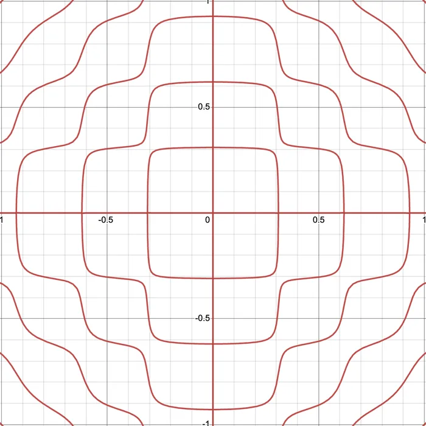
/ICONOGRAPHY
JBL/Final design
We created three distinct themes: Evergreen, Gaming, and Luxury, giving the brand flexibility to feel just as relevant for a $29 pair of earbuds as it does for a $50K sound system, without ever losing what makes JBL feel like JBL.
A vibrant everyday expression, built for the broadest audience.
A more immersive expression, built for the gaming audience.
A more refined expression, built for the most premium products.
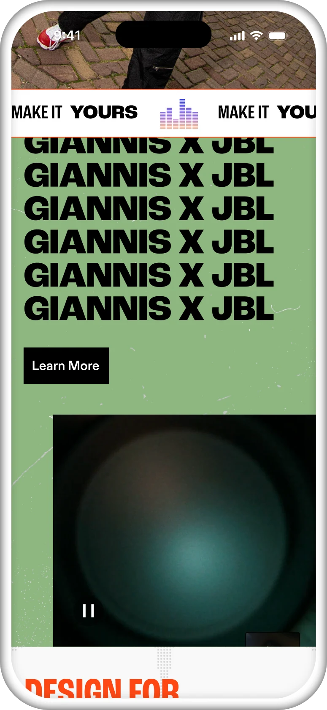
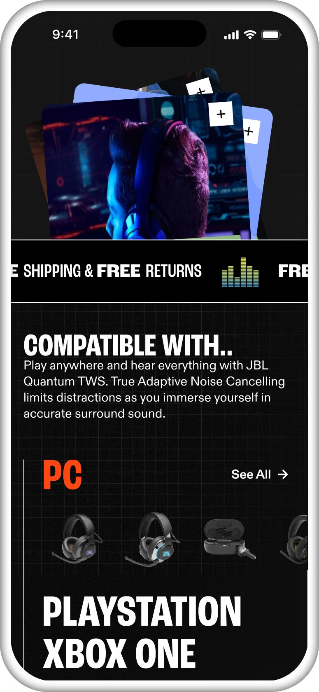
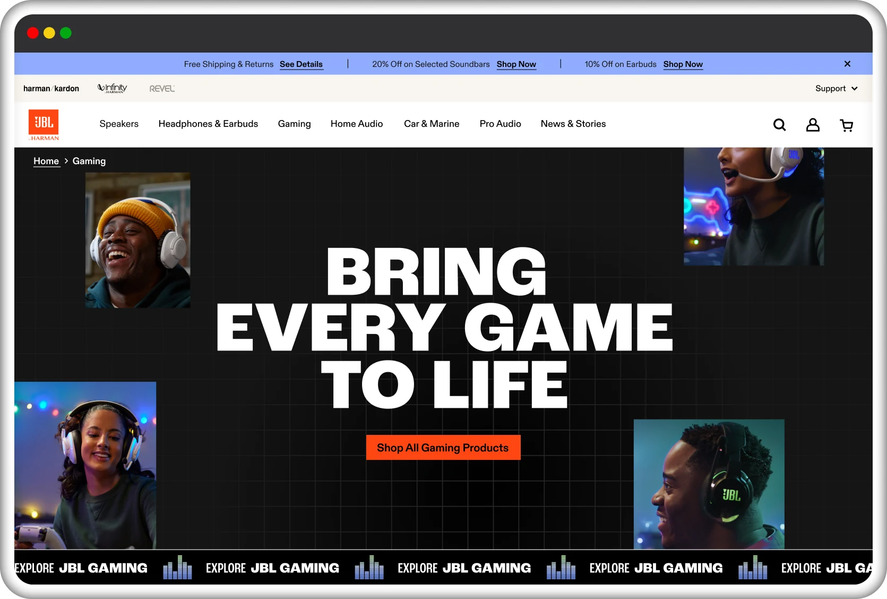
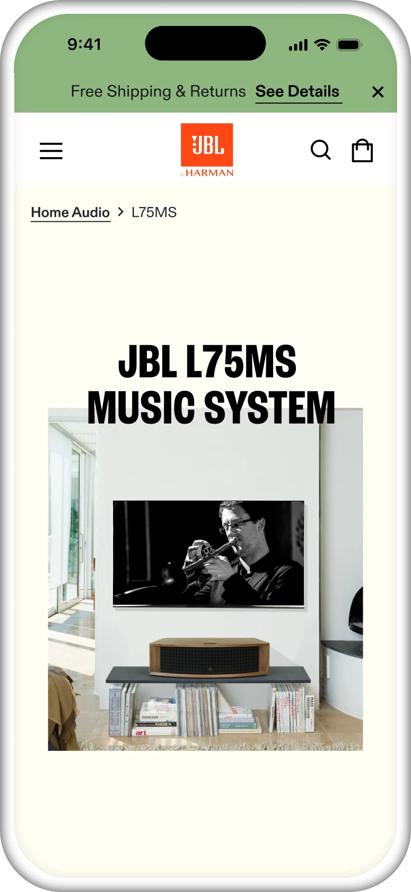
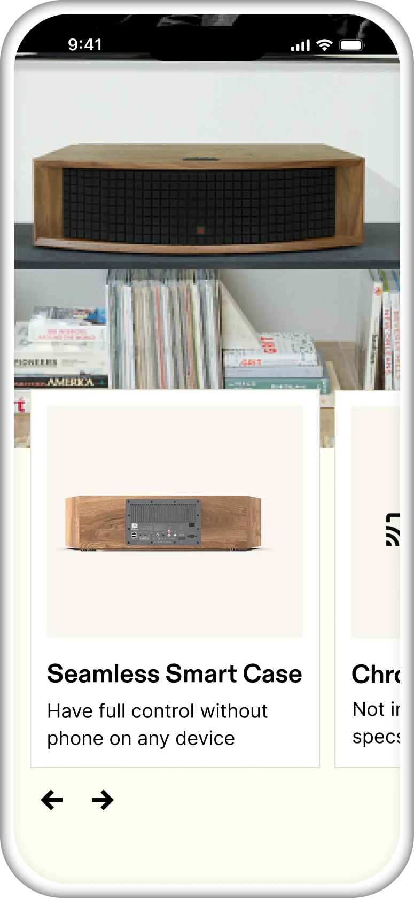
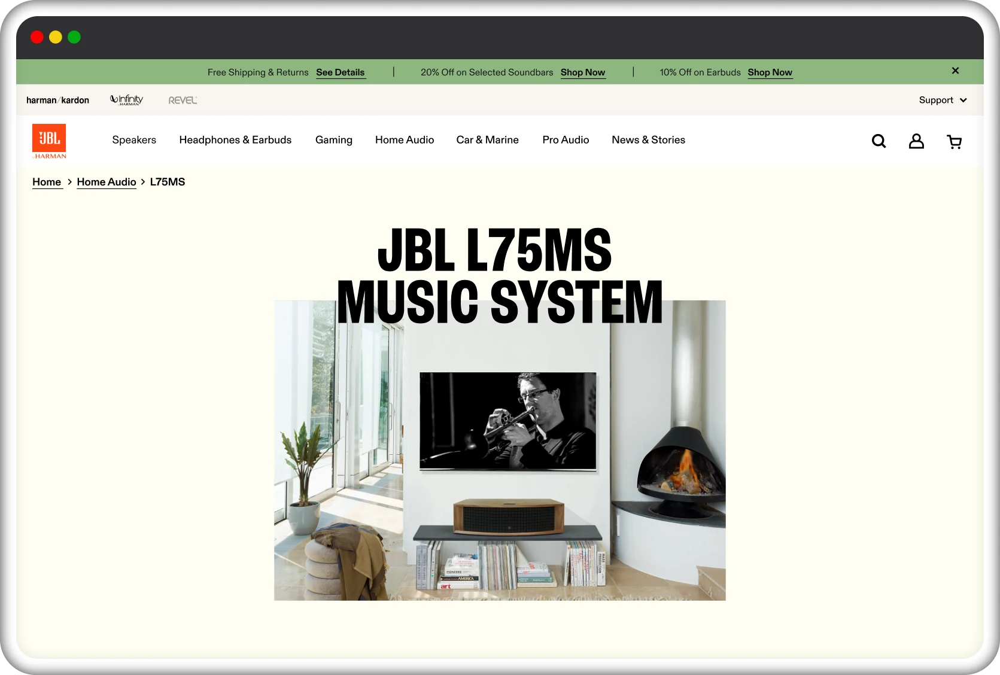
“This digital transformation ensures that our global audience can connect with JBL's legacy of sound excellence more seamlessly than ever before”
+2424%
Increase in avg.
session time on page
+3131%
Decrease in bounce
rate on L1 pages
+100100%
Systemized, better, and
cohesive brand
/Next up
How a Truck Launch Rewrote
the Playbook for an Industry
Volvo Trucks North America is a leading manufacturer of heavy-duty trucks, known for safety, innovation, and sustainability.
Volvo Trucks was preparing to launch its biggest truck launch in 27 years. To connect with today’s tech-savvy trucking industry, they partnered with us to reimagine its digital experience and reflect the innovation and ambition of its newest trucks.
In an industry typically characterized by slower adoption of technological advancements, we helped Volvo Trucks shatter the mold with the redesign and digital reveal of their flagship VNL long-haul truck.
+350%
Visitors at launch
+108%
Page views post-launch
+991%
Configurator builds post-launch
Fueling the Weekly
Rhythm of Football
The NFL dominates American sports, it accounted for 93 of the 100 most-watched TV broadcasts in all of 2023.
Even as the nation’s most-watched sport, the NFL needed to modernize its app and website to bring the game closer to its die-hard fan base and new fans alike. So the NFL called an audible, transforming its digital approach into more than just a game day companion, but an experience that fuels the rhythm of the game – every play, day and week, on and off-season.
Develop strategic design solutions that not only enhance user experience but also create a scalable design system adaptable to various user needs and future expansions within the broader NFL ecosystem.
2.3B
Minutes streamed
on app
+21.2min
Spent on average
per visit (+20% YoY)
+5M
Weekly users
Shaping the future of
education solutions
For more than 75 years, ETS (Education Testing Service) has been the global arbiter of standardised testing and research.
ETS was only scratching the surface in leveraging its best-in-class services, tools and expertise to impact its business. It also faced significant hurdles posed by emerging challengers and ever-evolving technological advancements disrupting the testing and assessments industry.
We partnered with ETS for a comprehensive business and brand transformation, intent on driving successful B2B growth and bolstering its reputation globally. Over six months, we evolved ETS’ strategic vision by overhauling its business, leading strategy for a vast rebrand, and delivering refreshed storytelling and design across every digital touchpoint.
+888%
Increase in user growth
with ETS Solutions
+10M
Impressions driven from press across
CNBC, Campaign, and more
+12%
Brand lift following
the initial rebrand